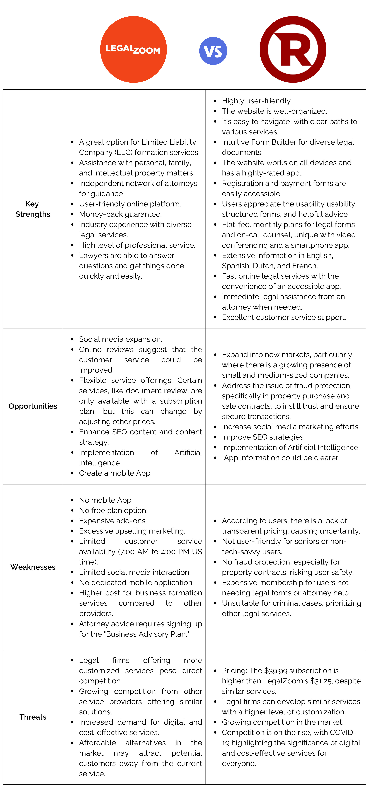
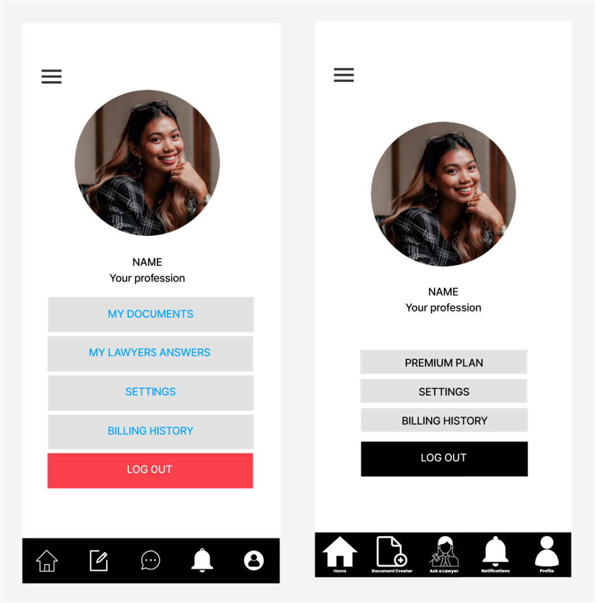
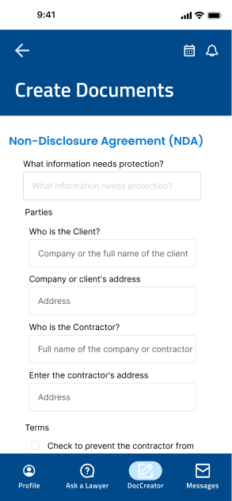
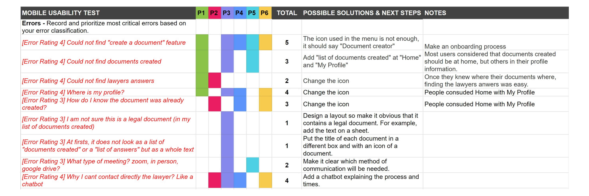

👩🏻⚖️Entrepreneurs often struggle to find reliable and affordable legal
services to navigate the legal
framework and protect their interests and businesses.
Goal of the Project:📱The Untangle App directly addresses this challenge by
offering cost-effective
access to trustworthy and convenient legal advice, enabling entrepreneurs to resolve common legal
queries efficiently while saving valuable time and resources..
💡Design thinking was employed to tackle this challenge, comprising the
following 6 phases (🖰 click to see):
♟️Sole UX Designer, in collaboration with legal experts and
entrepreneurs.
Part of UX certification, Berlin.
Duration:
⏱️January to July 2023.
Tools:
⚒️Figma, Miro, Trello, Canva, Optimal Workshop, Helio and Survey Monkey.
Empathize: Understanding the User
Research Goals
The very first step: ➡️ To deeply understand the problems faced by entrepreneurs when seeking legal advice.
The main objectives of the research were:
Identify entrepreneurs' actions when they require legal assistance.
Understand their most common legal needs.
Uncover frustrations experienced in obtaining legal advice.
Determine the optimal approach to meeting these needs and addressing
frustrations.
Research Methods
A multifaceted approach was needed involving:
Competitive Analysis
Surveys and Interviews
Competitive Analysis
📈The research project began with a competitive analysis to gather user insights and frustrations, identify
product
weaknesses, and uncover opportunities for differentiation and improvement.
🌎In Ecuador, there is currently a lack of highly developed legal apps, similar to those in the United
States
and Europe.
📲To draw inspiration, we studied two popular platforms, LegalZoom and Rocket Lawyer, and incorporated
feedback from app reviews, including App Review, TechCrunch, GetApp, and more.
Competitive Analysis Summary

Hypothesis Statement
Based on the competitive analysis, the hypothesis is that incorporating these features will make the
Untangled app not just useful and friendly but also desirable compared to its competitors:
Network of Attorneys: Access to expert attorneys for personalized
guidance.
User-Friendly Platform: Intuitive design for easy navigation.
Money-Back Guarantee.
Wide range of legal services to meet different needs.
Powerful Algorithm.
Fast and Convenient Services: Swift access to legal services through
an accessible app.
Prompt Legal Assistance from attorneys when required.
Intuitive Form Builder.
Strong customer supportfor timely assistance.
Surveys and Interviews
Surveys provided preliminary insights, while interviews delved deeper into user preferences and
requirements.
The interviews with the entrepreneurs covered a wide range of ages, from 28 to 54 years old, the age
range in which most Ecuadorian entrepreneurs are found.
There were a total of 5️⃣ interviews.
Survey and Interviews Main Findings
Here's a quick summary of the 8 key findings:
Common legal needs include model contracts, notary proceedings, affidavits, deeds, and
intellectual
property protection.
Most interviewees need a lawyer several times a year, especially those running businesses.
For basic legal matters, people tend to consult their trusted network, but they are open to
using legal apps.
While many are aware of digital legal services, they primarily use them for simple legal issues.
Some stay informed about legal changes through the news and by reading newspaper articles or
social media.
The desired app features include FAQs, lawyer consultations,
document templates, reminders, in-app payments, and reliable real-time guidance.
Payment transparency, flexible payment options, and customer service are essential to
interviewees.
For tax legal matter, almost all users turn to their accountants.
Initial Insights
The competitive analysis-based hypothesis suggests essential app features but overlooks other critical
findings from the survey and interviews:
Specific legal needs (types of legal services).
Consultation frequency.
Trust in existing networks, especially for tax issues (almost all users turn to accountants).
Preference for using legal apps for "simple legal matters".
The need of staying informed about regulatory changes.
Define: Identifying User Needs
Now, it's the moment to consolidate all the insights gathered in the Empathize phase.
The observations were analyzed, leading to the definition of central problems,
referred to as "problem statement":
Problem Statement
Entrepreneurs often struggle to find reliable and affordable legal
services to help them
establish and maintain their businesses within the legal framework.
To address their needs, a web application
was designed to provide them with cost-effective and convenient access to reliable
legal advice and sources of information.
This app allows entrepreneurs to quickly resolve common legal inquiries, saving them time and
resources in the process.
Following this, personas were created to shift the focus onto the human element before advancing to the
ideation phase.
Personas Development
The previous analysis was essential for understanding user needs and their significance. From this analysis,
two distinct user personas emerged. Meet Sebastian and Pamela:
Sebastian
Pamela
User Journey
Think of a user journey as a story that shows how someone uses a product to accomplish a goal, including
all
the steps, like using an app. Now, let's explore how Sebastian and Pamela would navigate their way to access
convenient and affordable legal advice:
💁🏾♂️Sebastian, eager to protect his intellectual property as a
performance, seeks affordable alternatives due
to budget constraints that prevent him from hiring a high-cost lawyer:
User Journey Sebastian
💁🏻♀️Pamela, a small business owner, seeks legal consultation to ensure
contracts avoid employer obligations and
minimize labor liabilities.
User Journey Pamela
User Flows
User flows are outlined to depict the steps taken by users to accomplish tasks within an app. By these
flows,
the user experience is understood and enhanced. For each feature of our app, user flows have been
created. The flows for "Ask a Lawyer" and "Legal DocCreator" are presented below:
Ask a Lawyer and Create LegalDoc
Ideate: Generate Ideas
💡Following a deep dive into user understanding and the definition of the problem statement, the Ideation Phase was initiated.
💭A wide array of potential solutions was brainstormed, resulting in the creation of a Sitemap—a tool that represents the structure of the web application.
✅The initial Sitemap was subsequently refined based on Card Sorting Results,
allowing for the progression to the design of low and mid-fidelity wireframes.
Card Sorting
Card sorting is a user research method where participants categorize information to improve website and app
organization.
During the open card sorting exercise, where participants independently group and label website content, many
important insights became evident. Here are the main ones:
Many participants, unfamiliar with legal terms,
struggled to classify items accurately. Despite this, maintaining the existing
legal categorization made sense (Ask a Lawyer and DocCreator as 2 separate features).
The exercise emphasized the importance of a comprehensive onboarding process
to help users comprehend the application's functions and navigate it
effectively.
Also, to address user confusion, the feature Q&A section with FAQs should be added.Legal services can be complex
for non-lawyers.
The exercise highlighted the need to exclude "My legal documents" and "My lawyers' answers" from the "My
profile" section and remove several cards to simplify processes.
In response to the card sorting results and an usability test, the site map has been updated three times,
leading to this latest version:
Untangled Site Map
Prototype: Develop Solutions
🎯The sitemap was adjusted to better match the user's perception and
reality of legal service delivery, resulting in a more intuitive organization of content.
#️⃣The number of
categories was reduced to make it easier for users to navigate and understand the application.
Now, it was possible to design 💵cost-effective paper prototypes of simplified versions of the web
application and the four basic features
to explore its Desirability, Feasibility, and Viability:
1. Onboarding
2. Access to my Account

3. Ask a Laywer
4. Create a LegalDoc

The prototypes underwent multiple changes following testing. User feedback was collected, leading to
improvements, and the refined prototype was subjected to another round of usability testing:
Test: Validate Solutions
A usability test on Figma's medium-fidelity prototypes assessed user interaction ease. The feedback refined
the prototype, leading to another test with the following specific parameters:
Tasks
Six users were assigned the following 4 tasks:
1. Making an appointment with a lawyer
2. Creating a non-disclosure agreement
3. Accessing all legal documents created
4. Accessing a lawyer's response
Research Objectives
1. Evaluate initial user interactions with the smartphone web app.
2. Determine app comprehension and perceived value.
3. Measure task completion and time.
4. Identify questions, needs, and errors during testing.
Target Audience
Entrepreneurs between 25 and 54 years old in Ecuador.
This age range represents 66.93% of entrepreneurs in Ecuador (source).
Methodology
1. Moderated in-person testing with two Ecuadorian and Berlin residents.
2. Moderated remote testing with four entrepreneurs in Quito, Ecuador.
Environment
The tests were administered both in-person and remotely.
Remote participants accessed the Figma prototype on their computers and shared their screens during
the test, utilizing Microsoft Teams and Google Meetings according to the user's choice.
In-person testing took place at the user's home, and the sessions were recorded using a camera and
tripod.
Metrics Collected
During the usability testing process, the following metrics were collected to assess the application's
performance:
The outcomes of the six usability tests have been processed and organized into an Affinity Map and a
Rainbow
spreadsheet to visually represent the observations and common issues encountered by participants.
Affinity Map
Rainbow spreadsheet

Three noteworthy findings are:
Discoverability Issues
The 6 usability tests revealed issues mostly related to discoverability. Users appreciated the app's
utility but struggled with tasks 1, 3, and 4, and often confused between "profile" and "home".
Two Personas Emerged
User feedback has illuminated two distinct user categories:
Financially privileged entrepreneurs seeking elegance in the app
Lower-income users concerned about affordability and user-friendliness.
Based on the goal of this project, feedback from the target persona of entrepreneurs in need of
affordable legal advice will be prioritized. However, this depends on business goals.
The Need to Alleviate Legal Service Concerns
During the usability test, I observed that certain users expressed apprehension regarding the cost of
legal services and the complexity of legal issues, understandably so, as these topics can be unsettling
for many. After conducting research on colors known to evoke a sense of calmness, I determined that
using
blue and green would be suitable color options for a legal app.
A preference test regarding colors was performed. The results of the test revealed a significant
distinction between blue and green colors, with
83% favoring blue. Therefore, blue tones were chosen as they were the preferred color. One user even
remarked that blue is a classic, clean color often associated with trust.
If it becomes a reality, it would be a dream for Ecuadorian entrepreneurs.👌🏼
Iteration: Last and Upcoming Steps
Design Harmony and Accessibility Commitment
High-fidelity wireframes were crafted using Gestalt Theory and Material Design
Principles, focusing on clear
organization, consistent elements, and a soothing palette of reassuring blue shades.
The app is friendly to everyone! It follows guidelines to make sure the colors and text are easy to
see. Nevertheless, incorporation of specialized technology to assist users with diverse abilities is
pending.
UX Evolution: Collaborative Refinement
Untangled's design has been refined with the valuable input and suggestions from fellow UX designers,
significantly shaping this latest version. The primary features are in place, but some issues still need
attention. The "DocCreator" and Chatbot features, still need fine-tuning for optimal performance.
User-Centered Assessment and Expansion
Continued assessments are necessary to ensure alignment with business goals, including pricing
accessibility.
Furthermore, it's essential to assess user needs, preferences, and expectations with a specific focus on UI
testing, A/B testing, accessibility and usability testing and user feedback surveys.
Lastly, it's crucial to carry out a separate analysis tailored to a different audience, such as lawyers,
legal firms, or other service providers interested in offering this service.
Latest Interactive Prototype Access:
Here you can access to the latest design: View Design
Final Reflections:
Design Evolution:
The original and final versions of the web app differ significantly.
Investigations and utility tests revealed that the main menu should highlight the app's main features.
I realized it wasn't necessary to separate each feature into different screens, leading me to reduce the
number of pages.
Additionally, I identified the need to implement services I hadn't initially considered, especially
regarding regulatory changes that impact entrepreneurs.
Market Differentiators:
There are similar legal apps internationally, but Untangled stands out for being tailored for Ecuadorian
entrepreneurs.
Each country presents unique challenges due to their regulatory frameworks; our app recognizes and
addresses these differences.
The design is unique, focusing on entrepreneurs seeking reliable legal services without the traditional
high cost.
We have a section for regulatory updates, a particular need in contexts with frequent changes.
User Focus and Possible Improvements:
I noticed many people feel fear when thinking about legal costs, leading me to choose a design that
conveys trust and tranquility.
In retrospect, I would've liked to explore a design that also appeals to wealthier entrepreneurs.
I believe collaborating with legal firms and more lawyers would have enriched the project, especially to
integrate pro-bono services and a complete list of services and prices.
Challenges and Tools:
Conducting usability tests alone was challenging; at times, I missed valuable details when noting user
reactions.
Not everyone was willing to be recorded, limiting subsequent review.
My initial skills in Figma limited the design of the first interactive prototype, though over time I
improved my proficiency with the tool.
Lessons for Future Projects:
If I could start over, I would replicate the process up to the usability tests.
I believe I should have conducted more tests, preferably in person, and with the support of an assistant.